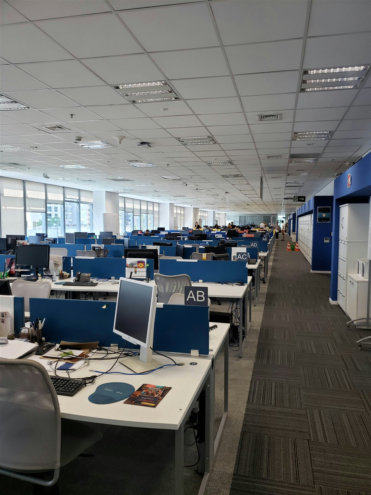
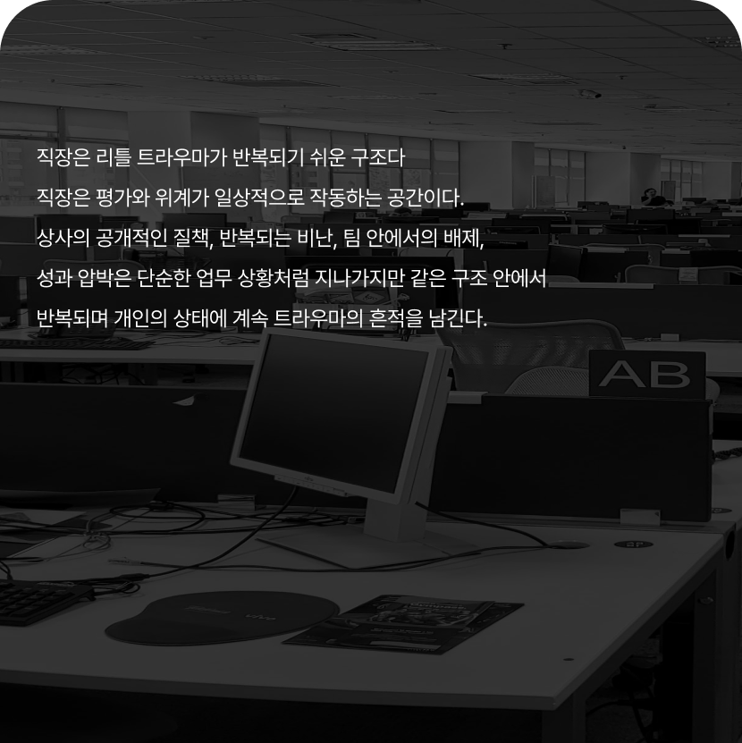
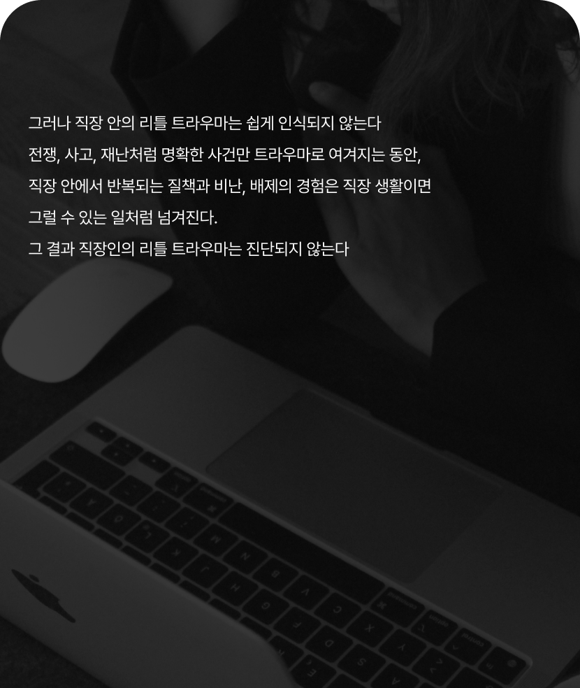
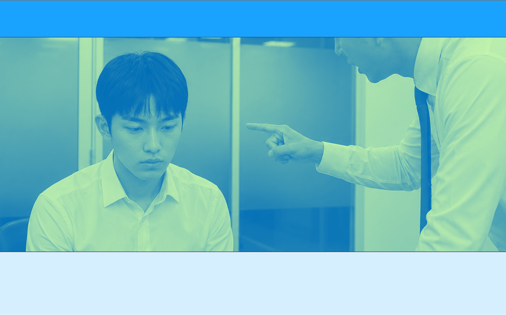
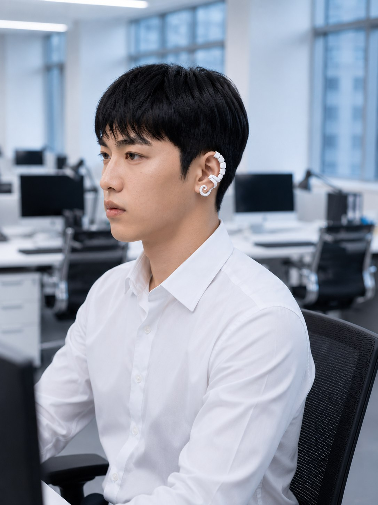
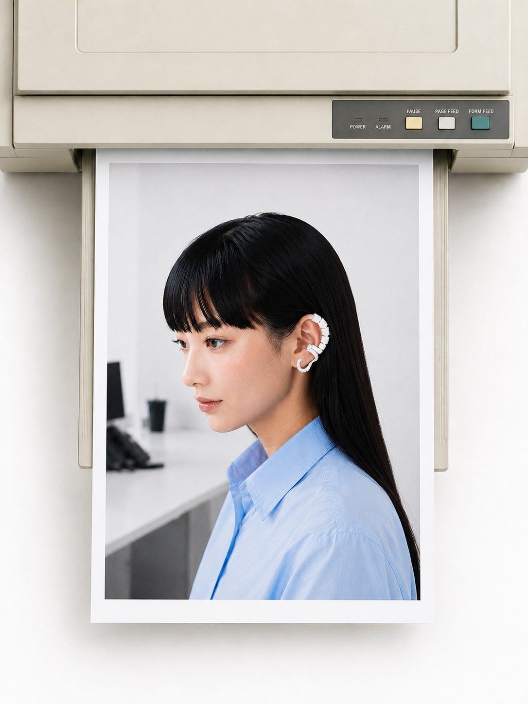

Problem 01
09:02 AM
Meeting started Your name was called
New feedback received Please review and respond
23:41 PM Still thinking about it
Overview
CTRL KEY는 직장 안에서 반복되는 리틀 트라우마의 순간에 주목하는 웨어러블 브랜드다.
상사의 공개적인 질책, 팀 안에서의 배제, 반복되는 비난과 평가처럼 쉽게
지나간다고 여겨지는 순간들은 개인의 상태에 오래 남는다
CTRL KEY는 그 순간을 피하게 하는 것이 아니라, 압력,온도,진동 같은
감각적 그라운딩을 통해 사용자가 다시 자신의 상태를 조율할 수 있도록 돕는다


Problem 01

Problem 02
Problem 03
직장안에서의 리틀 트라우마는 머리보다 몸에 먼저 남는다
숨이 턱 막히고, 손끝이 차가워지고, 심장이 빨리 뛴다
CTRL KEY는 이런 트라우마 상황에서 다시 나의 감각으로
돌아오는 방법에 주목한다
트라우마의 순간, 다시 나의 감각으로 돌아올 수 있다면?
Solution
CTRL KEY의 솔루션은 그라운딩이다.
그라운딩은 트라우마 상태에서 몸의 감각을 통해 ‘나는 지금 여기에 있다’를 인식하게 하는
심리학적 안정화 기법이다. CTRL KEY는 이 기법을 귀에 착용하는 액세서리형 웨어러블로
전환한다. 압력, 온도, 진동, 저주파, 호흡의 감각을 통해 사용자가 트라우마의 순간에
다시 자신의 상태를 컨트롤할 수 있도록 돕는다.
호흡의 감각을 통해 트라우마의 순간, 다시 자신의 상태를 조율할 수 있도록 돕는다.
진동의 감각을 통해 트라우마의 순간, 다시 자신의 상태를 조율할 수 있도록 돕는다.
온도의 감각을 통해 트라우마의 순간, 다시 자신의 상태를 조율할 수 있도록 돕는다.
압력의 감각을 통해 트라우마의 순간, 다시 자신의 상태를 조율할 수 있도록 돕는다.
저주파의 감각을 통해 트라우마의 순간, 다시 자신의 상태를 조율할 수 있도록 돕는다.
Project Goal
From accumulated workplace stress to in-the-moment sensory regulation
CTRL KEY는 직장 안에서 반복되는 작은 트리거가 보이지 않는 스트레스로 축적되는 순간에 주목한다.
참고 넘기는 경험이 아니라, 감각을 통해 그 자리에서 자신의 상태를 인식하고 조율하는 경험으로 전환한다

반복되는 평가와 피드백, 관계 속 긴장이
일상의 일부처럼 지나가며 개인에게 축적된다

직장 안에서 마주하는 트라우마 순간에도
감각을 통해 다시 자신의 상태를 조율한다
Strategy
트라우마 순간에 가장 가까이 작동하는 웨어러블
직장 안의 리틀 트라우마는 호흡, 심박, 체온, 긴장 같은 신체 반응으로 먼저 나타난다.
CTRL KEY는 귀에 착용되는 웨어러블을 통해 그 순간 바로 감각 신호를 전달하고,
사용자가 다시 자신의 상태를 조율하도록 돕는다.

Through Trauma,
Ground in Yourself
트라우마의 순간을 지나, 나에게 돌아오다
Naming
CTRL KEY는 직장인의 가장 가까운 인터페이스인 키보드에서 출발한다.
Control Key처럼, 흔들리는 순간 스스로의 감각을 다시 제어하는 하나의 키가 된다
Core value
내면의
/ Inner
감각의
/Sensory
균형의
/ Balance
Design system
Primary Color / Ctrl sky blue
Primary Color / Ctrl lime green
KO
pretendard
가나다라마바사아자차카타파하
01234567890
BOLD
트라우마의 순간을 지나, 나에게 돌아오다
Medium
트라우마의 순간을 지나, 나에게 돌아오다
Light
트라우마의 순간을 지나, 나에게 돌아오다
EN
Alexandria
ABCDEFGHIJKLMNOPQRSTUVWXYZ
01234567890
BOLD
Through Trauma, Ground in Yourself
Medium
Through Trauma, Ground in Yourself
Light
Through Trauma, Ground in Yourself